Bunlar çizim değil, oyunun kendisinden alınmış ekran görüntüleri: aynı dünya, aynı kamera, bir yanda bugünkü harita, bir yanda yenisi. Emoji gökdelenler yerine her krallığın kendi mimarisinde kaleler, düz yeşil yerine bölgeye göre değişen arazi, kıyıda dağlar, yollar, tarlalar, ve haritada yürüyen birlikler artık savaştaki askerlerin kendisi.
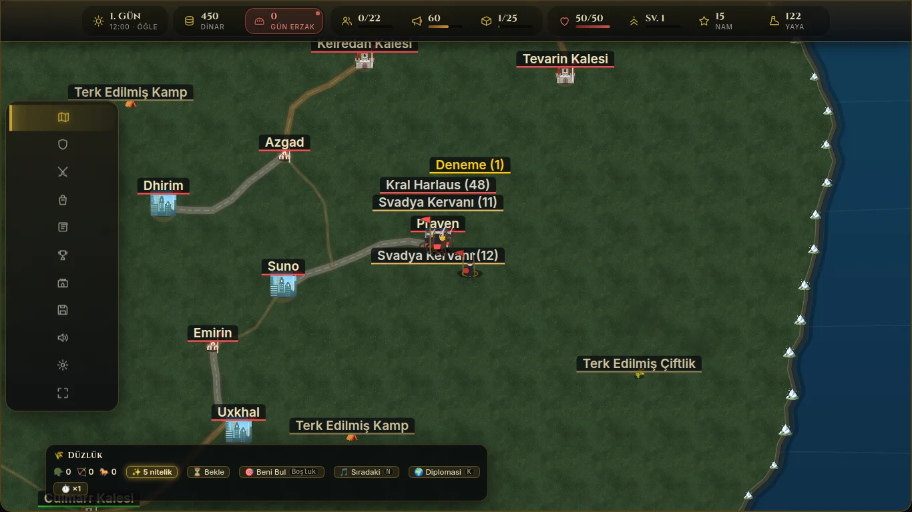
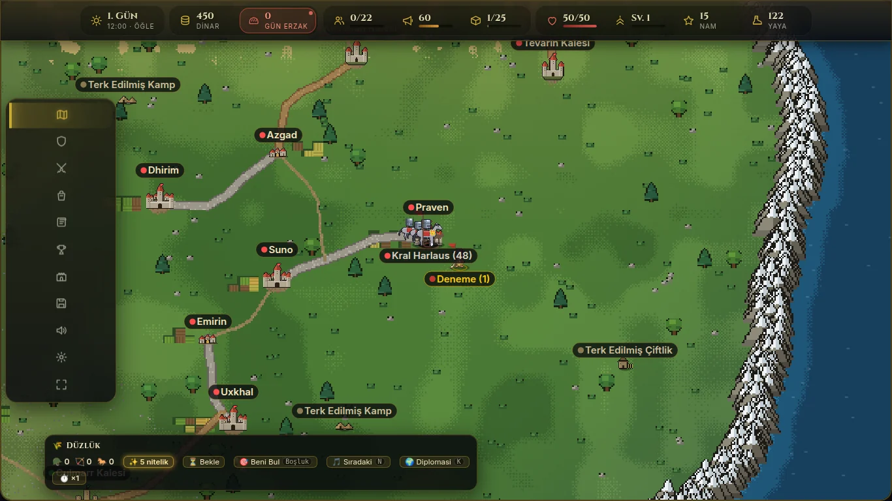
BugünÖnerilenÇizgiyi sağa sola sürükle. Soldaki bugünkü harita, sağdaki yenisi.
Her görüntünün üstündeki düğmeyle bugünkü ve önerilen hâl arasında geçiş yapabilirsin. Hepsi masaüstü, 1366×768.
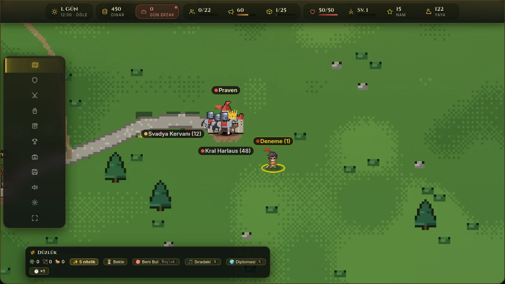
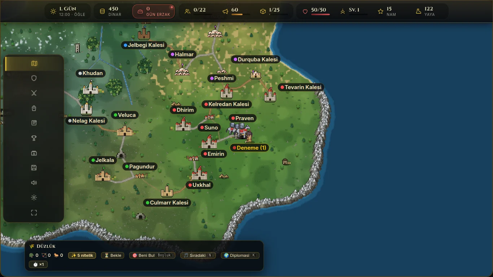
Şehir, kale ve köy üç ayrı çizim. Bayrak sahibinin renginde. Bir kale kuşatmada el değiştirirse bayrağı değişir, duvarları değil.
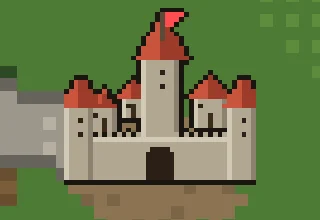
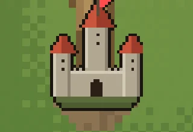
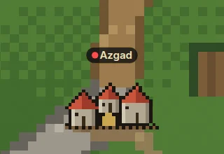
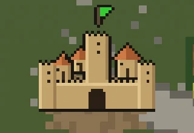
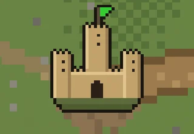
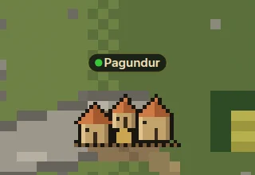
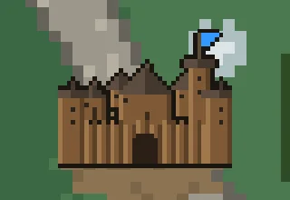
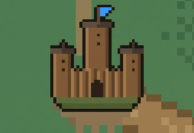
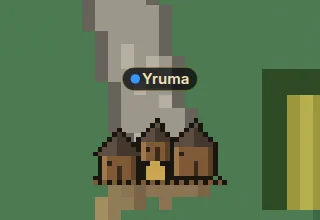
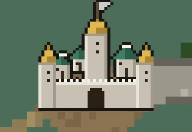
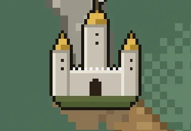
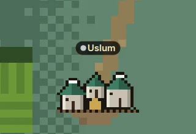
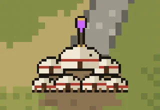
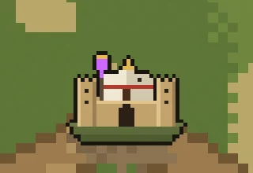
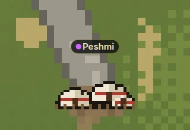
Gece harita bugünkünden biraz daha karanlık. Şehirlerin ve köylerin pencereleri tek tek yanıyor, ocak ışığı etrafa sızıyor. Yazılar karanlıkta kalmıyor, gecenin üstünde net duruyor.
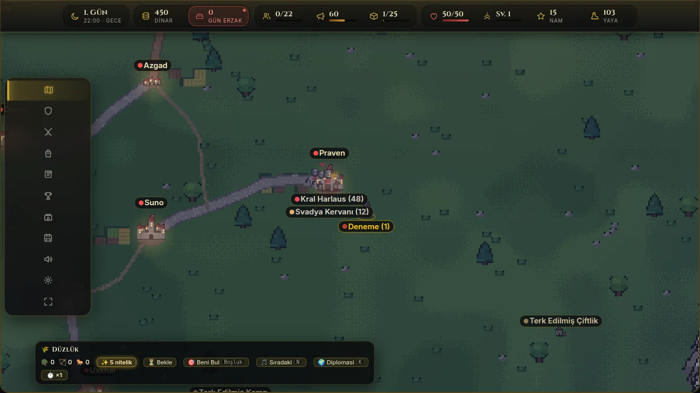
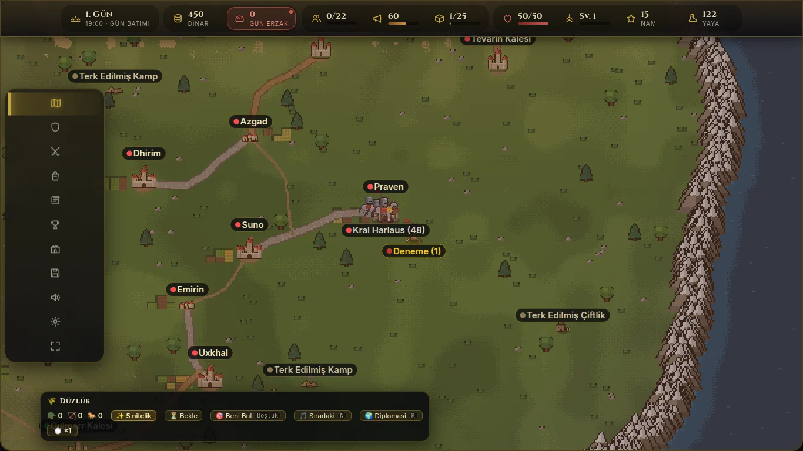
Telefonda da bütün yenilikler var. Sadece deniz parıltısı ve gece pencerelerinin hâlesi pil için kapalı.
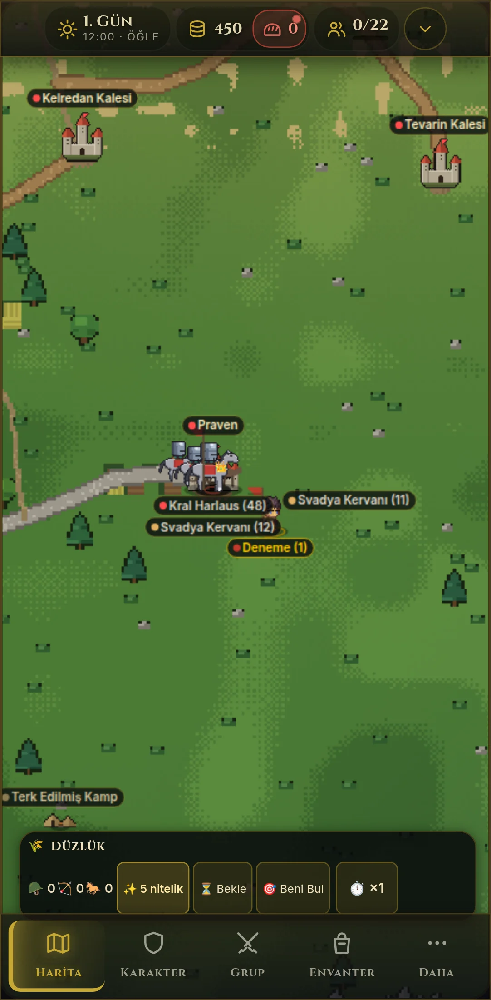
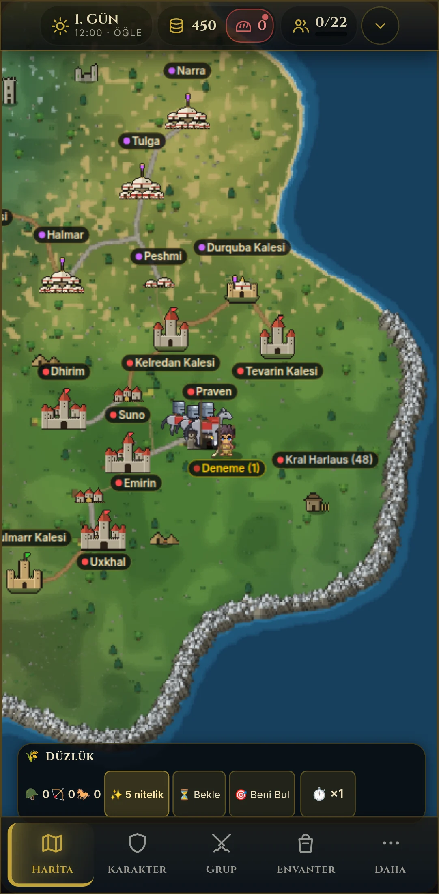
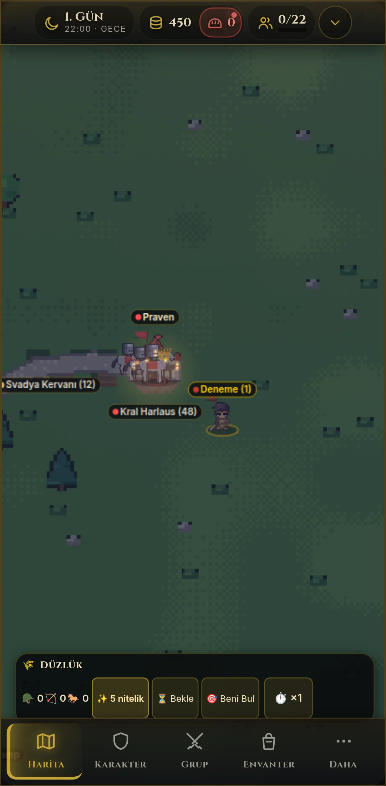
Arazinin tamamı dünya kurulurken bir kez çiziliyor. Her karede sadece o hazır resim, yerleşimler, birlikler ve yazılar çiziliyor. Ölçümler başsız Chromium'da, kare başına milisaniye (bir karenin bütçesi 16,7 ms).
| Yakınlık | Masaüstü bugün | Masaüstü yeni | Telefon bugün | Telefon yeni |
|---|---|---|---|---|
| Yakın (0,8) | 1,3–2,0 | 0,4–0,9 | 0,7–1,1 | 0,3–0,5 |
| Orta (0,3) | 1,2–1,9 | 0,6–1,1 | 0,6–1,2 | 0,3–0,7 |
| Bütün kıta (0,12) | 1,1–2,4 | 2,5–5 | 0,7–0,9 | 2,6–4 |
| Arazinin ilk çizimi (bir kez) | – | 350 ms | – | 430 ms |
Seçimlerini kaydettiğinde ben buradan okuyorum. İstersen sohbete yazman da yeterli.